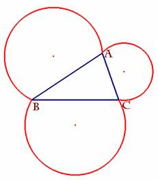
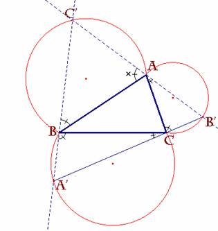
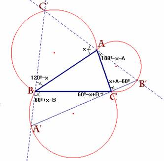
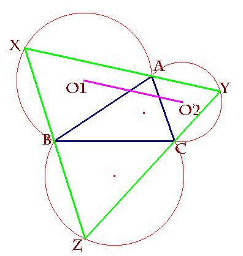
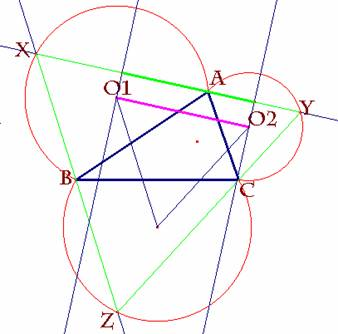
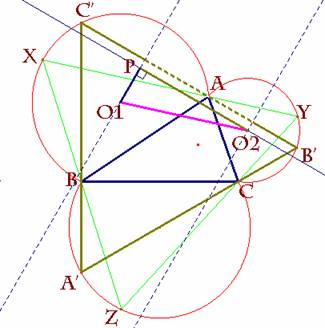
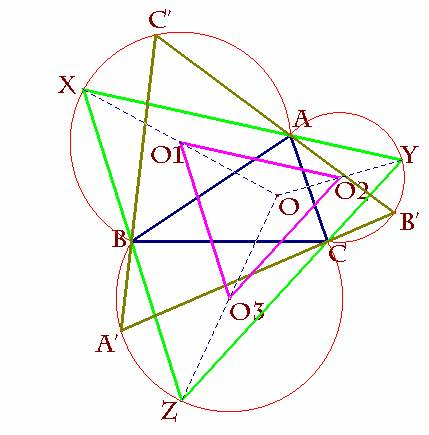

66.- Un problema de máximos del Encuentro de Matemáticos
Andaluces, con permiso del profesor F.R. Fernández
García, de la Universidad de Sevilla
(DEPARTAMENTO DE ESTADISTICA E INVESTIGACION OPERATIVA)
Dado un triángulo
cualquiera circunscribir en él el triángulo equilátero de área máxima.

En primer lugar, dado un triángulo ABC, siempre podemos
construir el arco-capaz de los lados a, b, y c de dicho triángulo y de medida
el ángulo 60º.
De esta manera
tenemos la figura siguiente:
Prop.- Consideremos un punto cualquiera de uno de los
tres arcos, p.e. C' y trazamos por C' las dos rectas
que pasan respectivamente por A y B cortando a los otros dos arcos en B' y A'.
Entonces los puntos B', C y A' son colineales.
|
Sea x el ángulo señalado en la figura y, en función de
x, los restantes ángulos vendrán representados de la manera que se indica. Así A', C y B' serán colineales
si los ángulos que concurren en C suman 180º. Pero esto es cierto ya que (60º-x
+B) + C + (x+A-60º) =A +B +C = 180º. |
|
|
 |
 |
En definitiva, ya sabemos que al trazar las rectas desde
cualquier punto de uno de los arcos por los extremos de su segmento base, intersecan con los otros arcos en dos puntos
que, junto con el primero determinan un triángulo equilátero que queda circunscrito
al primer triángulo.
Por tanto para conseguir el de mayor área habrá que conseguir
el triángulo equilátero de mayor lado y ese no es otro que el construido de la
siguiente manera:
|
 |
|
|
Dado el segmento O1O2 se traza por A la recta paralela a dicho
segmento, determinando así los puntos X e Y. Por la propiedad anterior,
cerramos la figura con el punto Z, obteniendo así el triángulo XYZ. Por qué el lado XY así construido tiene la propiedad deseada.
Veamos esto en dos escenas: |
|
|
 |
 |
|
XY = 2×O1O2 |
1/2×C'B' < O1O2 por ser el primero un cateto y el
segundo la hipotenusa del triángulo rectángulo en P; O1O2P.
Luego C'B' < XY = 2×O1O2 c.q.d. |
Nota: Además del resultado así visto, se tiene además que
los centros O1O2O3 forman un triángulo equilátero
(=triángulo exterior de Napoleón) de lado la mitad del obtenido, o si se
quiere, el obtenido es la imagen homotética del O1O2O3
con centro en O (punto de Fermat). Por supuesto, para
que sea construido el punto de Fermat el triángulo
ABC habrá de ser acutángulo.
